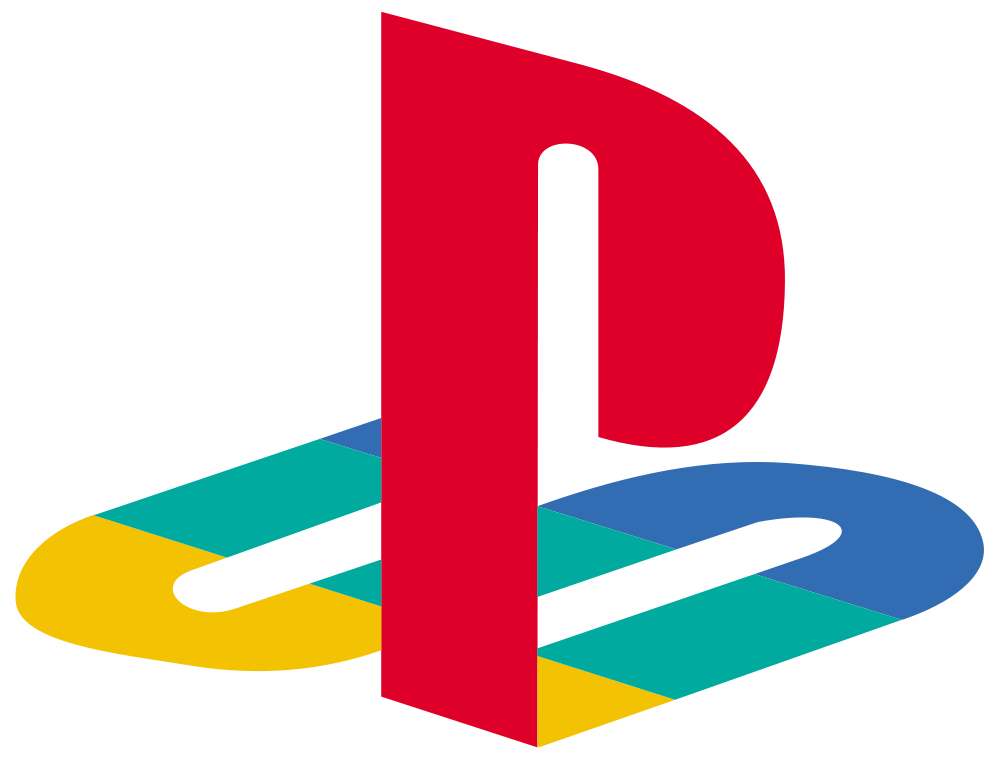
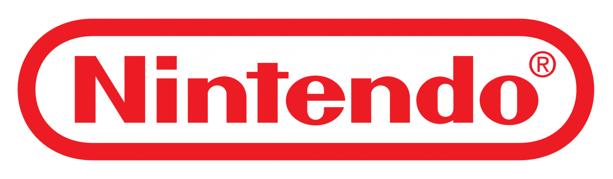

¿Que son los video juegos?
Es una aplicación interactiva orientada al entretenimiento que, a través de mandos o controles, permite simular experiencias en la pantalla de un televisor, computadora, celular o consola. A diferencia del cine o la televisión, el usuario no es un espectador pasivo, sino el protagonista que toma las decisiones y controla la acción.
XBOX

Xbox: El marketing de "Ecosistema, Valor y Accesibilidad"
Para Microsoft, la consola física ya no es el centro de su universo. Su estrategia digital mutó para vender un concepto: Xbox Game Pass y el juego en la nube (Cloud Gaming). Estrategia Digital: El marketing de Xbox está agresivamente enfocado al rendimiento por tu dinero (Value Messaging). Sus anuncios en internet y redes sociales no te dicen "compra una consola", sino "juega a cientos de juegos en tu teléfono, PC o TV por una suscripción mensual". Su segmentación digital apunta mucho a comunidades de PC y creadores de contenido (streamers). Inversión Publicitaria: Invierten fuertemente en marketing de respuesta directa (anuncios web optimizados para que hagas clic y te suscribas en ese mismo instante) y en campañas digitales que destacan la retrocompatibilidad y el juego cruzado. Su tono es más cercano, de comunidad, intentando derribar las barreras de entrada al ecosistema de videojuegos.
PLAY STATION


PlayStation: El enfoque cinematográfico y el "Prestigio Premium"
Sony posiciona a la PlayStation como el estándar de oro de la experiencia inmersiva.
Su marketing digital está diseñado para hacerte sentir que estás comprando entretenimiento de lujo.
Estrategia Digital: Inversión masiva en contenido audiovisual de altísima fidelidad. Sus campañas en YouTube,
redes sociales y banners no se centran en los componentes técnicos de la consola, sino en la emoción y la espectacularidad.
Utilizan tráilers cinemáticos de sus grandes exclusivas (God of War, Spider-Man) como ganchos de conversión.
Inversión Publicitaria:
Históricamente es la que más gasta en publicidad tradicional y digital de gran escala (eventos masivos, anuncios pagados en grandes
portales y patrocinios de torneos como la Champions League).
Su mensaje clave es aspiracional:
"Si quieres la experiencia de máxima calidad y los juegos de los que todo el mundo habla, tienes que estar aquí".
NINTENDO


Nintendo: La fórmula de la "Nostalgia, IP Propia y Cero Fricción"
Nintendo ignora por completo la carrera tecnológica y las guerras de potencia. Su marketing digital se basa en el poder de sus personajes (sus propiedades intelectuales o IP) y en la universalidad. Estrategia Digital: Sus campañas en plataformas digitales están ultra-segmentadas para dos públicos muy específicos: familias (padres e hijos) y gamers nostálgicos. Sus anuncios muestran a personas reales jugando juntas en la sala de su casa, en un avión o en el parque (destacando la portabilidad del ecosistema Switch). El enfoque digital de Nintendo está "libre de tecnicismos"; no verás anuncios de Nintendo presumiendo tasas de refresco o resolución de pantalla, sino diversión inmediata. Inversión Publicitaria: Se concentran mucho en el marketing de influencers familiares, campañas en plataformas de video aptas para menores y anuncios en redes sociales durante temporadas clave (regreso a clases, Navidad). Saben que sus personajes (Mario, Zelda, Pokémon) son marcas culturales por sí mismas, por lo que su publicidad digital funciona casi de forma orgánica: el juego vende a la consola, y no al revés.
STEAM

El Ecosistema Publicitario de Steam: El Algoritmo sobre el Marketing Tradicional
A diferencia de Xbox, PlayStation o Nintendo, Steam (Valve) no invierte en campañas publicitarias pagadas en medios externos. Su estrategia digital se basa en convertir su propia plataforma en una máquina de mercadeo automatizada a través de tres pilares: Personalización por Algoritmo: La portada de Steam funciona como una red de anuncios interna. Utiliza tu historial de juego y etiquetas de la comunidad para mostrarte banners de títulos hiper-dirigidos a tus gustos individuales, maximizando la conversión sin gastar en pauta. Eventos de Temporada como Fenómeno Cultural: Las rebajas de Steam (Summer o Winter Sales) no se anuncian con comerciales tradicionales. Valve las diseña como eventos gamificados con mecánicas de cromos coleccionables e insignias, logrando que los usuarios, la prensa y las redes sociales viralicen el contenido de forma orgánica. Automatización del Co-Marketing: A través de herramientas como la Lista de Deseos (Wishlist) y festivales de demos como el Steam Next Fest, la plataforma automatiza el marketing por correo electrónico y notificaciones móviles para los desarrolladores, eliminando la necesidad de intermediarios publicitarios.